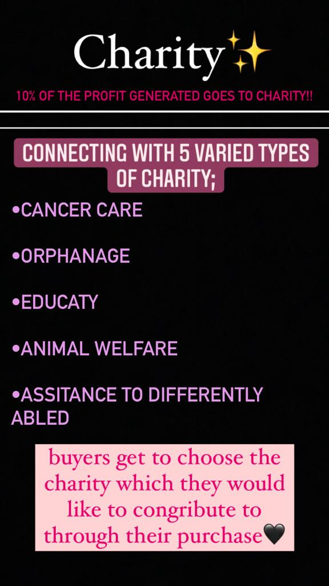
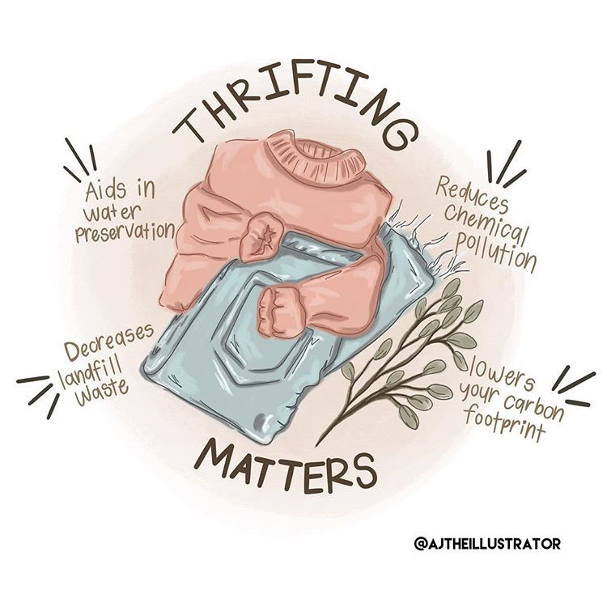
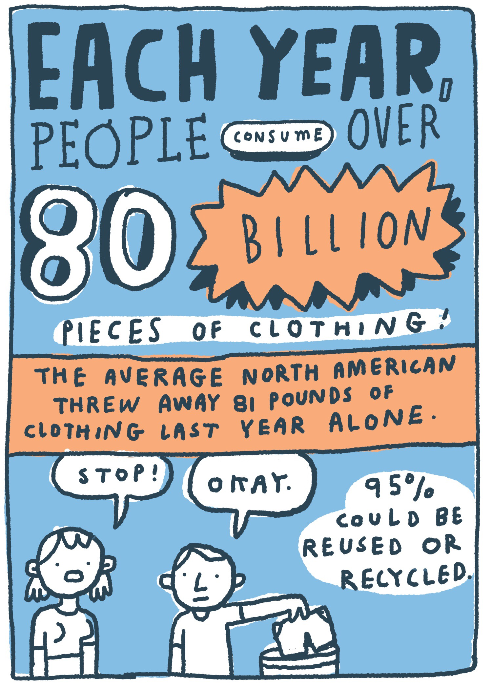

WHY thrift!?!
10+ Reasons WHY thrift?!
- Cost Effective so you can get stylish pieces for less
- Saving the Environment from the hazards of fast fashion
- In addition to being nice to the planet, thrifting is nice to people. Buying reduces both new items being produced AND the need for someone to produce them.
- Principle of 3 R's: REDUCE, REUSE, RECYCLE
- Support a charity: collaborating with diverse charities; cancer care; education; animal welfare; assistance to differently abled; orphanage
- Shop with purpose. Thrifting is gentler on the environment by reducing pollution and waste
- Reduces chemical pollution
- Thrifting is recycling. Point blank. By choosing preloved items over newly produced pieces, you're shrinking your carbon footprint
- People with limited financial resources often use thrift stores and resale shops to stretch their budgets.
Isn't frugal living a good idea for everyone? Why should anyone pay more for something than they have to just because they can?
Instead of paying full price or even a sale price for a new item, consider looking for the same (or similar) item at a resale shop at a steep discount.
- People like to browse at thrift stores, flea markets, garage sales, and auctions for hidden treasures.
A crystal vase, a valuable painting, an expensive watch, or some other hidden gem could be nestled among all of the everyday items in the store.
What the donor may not have recognized may be your chance to score a real treasure.
- Entrepreneurial shoppers buy used items to resell on internet sites such as eBay.
Thrift shops and consignment stores can be great sources for bargain items that can be resold for much more.
- If you get bored shopping for clothes at department stores or boutiques where items are neatly laid out and clearly labeled, you may be a natural thrift shopper.
Shopping secondhand lets you dig through the racks for your own personal treasures, and a little friendly competition with other serious thrifters adds to the excitement.


